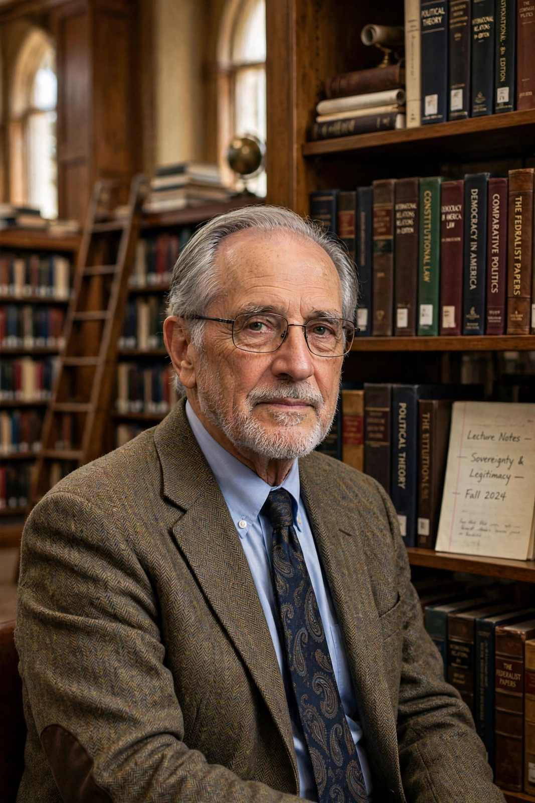

| Arend Lijphart | |
|---|---|
 Arend Lijphart | |
| Born | 17 August 1936, Apeldoorn, Netherlands |
| Fields | Comparative politics; democratic theory |
| Institutions | University of California, San Diego; Leiden University |
| Known for | Consociationalism; Patterns of Democracy (majoritarian vs consensus democracy) |
Arend d'Angremond Lijphart (born 17 August 1936) is a Dutch-American political scientist specialising in comparative politics, elections and voting systems, democratic institutions, and ethnically divided societies. He is Research Professor Emeritus of Political Science at the University of California, San Diego, and previously taught at Leiden University. He is regarded as the leading authority on consociational democracy and one of the most influential comparative political scientists of his generation.
Lijphart first developed the theory of consociational democracy in The Politics of Accommodation (1968) and Democracy in Plural Societies (1977), arguing that deeply divided societies — such as the Netherlands, Belgium, Switzerland and Austria — can remain stable democracies through elite power-sharing: grand coalitions, mutual vetoes, proportionality and segmental autonomy. In Democracies (1984) and the widely cited Patterns of Democracy (1999; 2nd ed. 2012), he compared 36 democracies along two dimensions — executives–parties and federal–unitary — contrasting the majoritarian ("Westminster") model with the consensus model, and concluded that consensus democracies perform at least as well economically and better on measures of democratic quality and inclusiveness. His framework has been applied widely, including to cases such as the Spanish transition to democracy and the Northern Ireland peace settlement.
Lijphart served as president of the American Political Science Association (1995–96) and received the Johan Skytte Prize, political science's highest honour, in 1997.